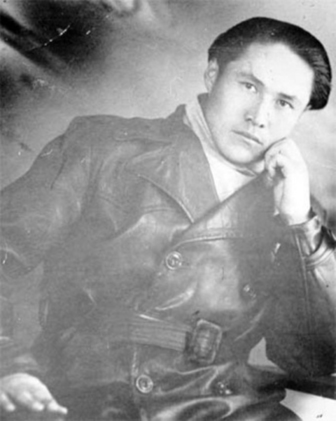
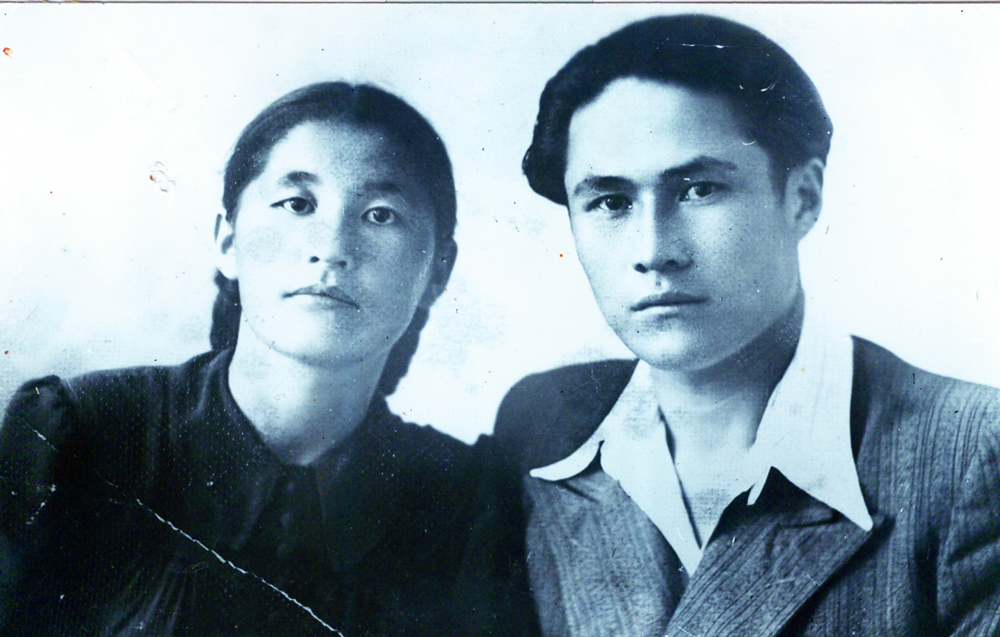
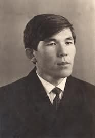
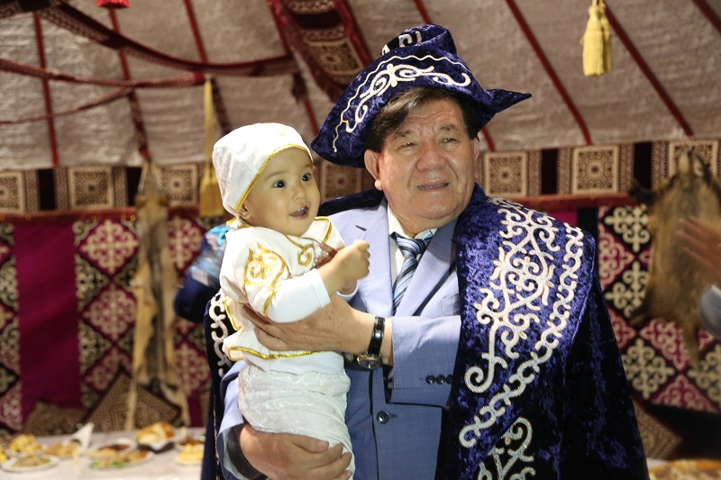
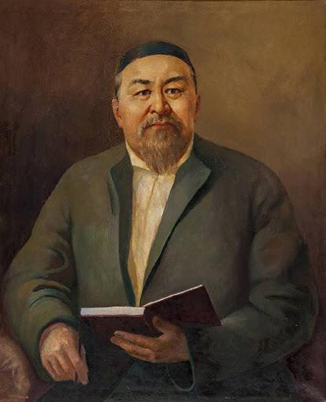
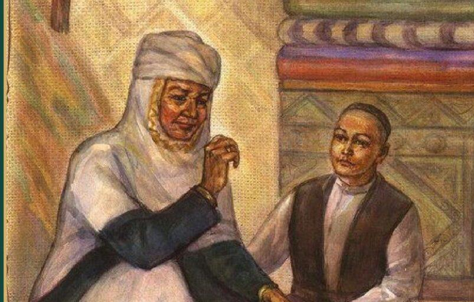
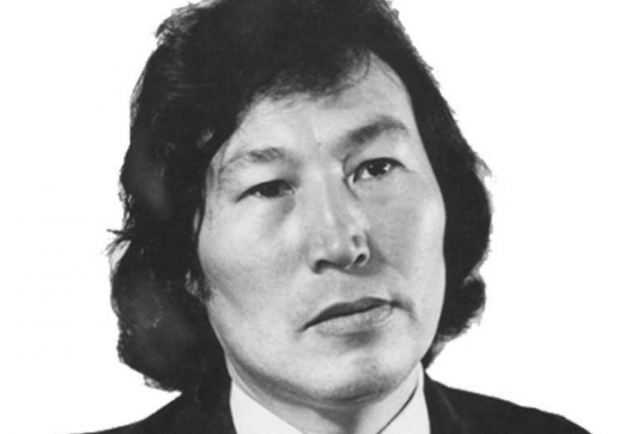

Балалар, ақиық ақын Мұқағали Мақатаевты танисыңдар ма? Бүгін сол ақынымыз жайлы және
оның дәл сендер сияқты бала
шағының қалай өткені туралы баяндайтын боламыз. Олай болса кеттік.
Мұқағали Сүлейменұлы Мақатаев (9 ақпан 1931, Алматы облысы, Райымбек ауданы Қарасаз - 27
наурыз 1976, Алматы)
шын аты Мұхаммедқали – қазақтың лирик ақыны, мұзбалақ ақын, өз заманында лайық бағасын
ала алмаса да өзінен
кейінгілер үшін мәртебесі биік ақиық ақын.
Мұқағали Мақатаевтың балалық шағы қазақтың басына төнген қайғы-қасіреттің бірнешеуімен
тұспа-тұс келді. Атап өтсем,
1932-33 жылдардағы ашаршылық кезі, 1937 жылғы саяси қуғын-сүргін, екінші дүниежүзілік
соғыс. Ал әкесі Сүлеймен қан
майданда қаза тапты. Болашақ ақын ер мінезді әжесі Тиынның тәрбиесін көріп,
аңыз-ертегілермен сусындап өскен еді.
Анасы ұлы жайында: Мен ұлымның ақындығы сағыныш атты сезімнен бастау алған деп ойлаймын.
Әкесі Сүлейменді
достарымен бірге 1941 жылдың желтоқсанында өртең сайынның аузына дейін тайлы таяғымыз
қалмастан ұмтылмас
қимастықпен шығарып салғанымыз есінде қалса керек. Әйтеуір әкесін ойлап , сағынып,
көзіне жиі-жиі жас алып
жүретін.
1941 жылы күзде Мұқағалидың әкесі Сүлейменді әскерге алады . Ел жиналып әскерге
шақырылған жігіттерді шығарып
салуға бара жатты .

Топ ішінде әкесімен қостасушы Мұқағали да бар. Топ бір жерге жиналып , соңғы рет бақұлдасуға
айналғанда Сүлеймен
әкеміз тұрып :
-Уа, ел-жұртым, сендерге өтінішім бар. Мына Мұқағали тұңғышым болса да өзіме тартпай,
әкесінің баласы боп өсіп
еді, осының бетінен иіскеуге рұқсат етіңіздер,-деп сұрайды.
Халық риза болып:
рұқсат, рұқсат: деп шуласады. Әкесі сонда бірінші және соңғы рет еркін қимылдап, баланы
өзіне
шақырып, құшақтап,
бетінен сүйеді.
Осы жерде «Әке» деген өлеңінен балалық шақтағы сағыныш сезімін көруге болады.
«Әке»
Әке, Сенің жасынңан асып барам,
Кезі-кезі келгенде тасып та алам.
Кезі-кезі келгенде жасып қалам,
Мына өмірге ,бәрібір,ғашық балаң.
Құр алақан емеспін қуаныштан,
Қуанштар алдымнан құрақ ұшқан.
Бір арыстан өмірден өткенімен,
Өмір сүріп келеді тірі арыстан.
Өкінбе,әке, отың бар сөнбейтұғын,
Ол мәңгілік жанады көрмей тыным.
Ұрпағың бар, ел менен ер намысын,
Тірі тұрса қолынан бермейтұғын.
1948 жылы Алматыда шет тілдер институтында оқып жүріп, артындағы отбасының тұрмысы ауыр
болғандықтан, соларға
көмектеспекші болып, оқуды еріксіз тастап, ауылға оралды. М.Мақатаев «Киров» атындағы
колхозда советтің секретары болып
жұмыс істейді.1952 жылы Қарасазда бастауыш кластарға орыс тілінен сабақ береді.Ауылда жүріп
үйленеді. Әйелінің аты
–Лашын. Балалары Майгүл,Жұлдыз,Шолпан,Айбар.Балаларын жанынан бетер жақсы көреді.
Ақындық жолы
Балаларға да арнап көптеген өлендер жазған. Осындай өлеңдері «Бәсіре» деген атпен 1981жылы
жарық
көрді.Ол қазақ
радиосында диктор болған.Газет-журналдарда жұмыс істеген.Оның өлеңдері туған жер,табиғат
туралы.Жастарды елді,табиғатты
сүюге,оны аялай біліуге үйретеді.Алып ақын туған даласы мен тауларына,ормандарына сағынышын
баса
алмай кеткен ұлы ақын .
Ақынның өзі жайлы жазған өлеңі.
« Менің анкетам»
Туған жерің?
Ұланынмын Қарасаз деп аталатын ауылдың.
Туған жылың?
1931 ж. Құрдасымын Шәмілдің.
Шыққан тегін?
Шаруамын.
Білімің ше?
Орташа ғой.
Алайда өзім жоғары бағалаймын.
Ана тілің?
Қазақша.
Қысылғанда орысша да, немісше де бар.
Қайда істедің?
Мынау « еңбек кітапшамнан « тауып ал.
Оқымаған, дипломсыз демесең , бір басымнан бар мамандық табылар.
Міңдеттісің бе әскерге?
Міндеттімін.
Мұхтар Шаханов балалық шағы
Мұхтар Шаханов 1942 жылы 2 шілдеде Оңтүстік Қазақстан облысы (қазіргі Түркістан
облысы)
Отырар ауданында
дүниеге
келген. Балалық шағы Төле би ауданындағы Қасқасу елді мекенінде төбенің басында
әкесі
қаздырған жертөледе
өтті.
Сол жертөленің жоғары жағында тау бар, бала ақын алғашқы өлеңдерін таудың бетінде
тастан
жасалған орындықта
отырып жазған. Ақынның әкесі Қасқасу елді мекенінде қари молда болған, ол Мұхтар 9
жаста
болған кезде
дүниеден
өтті. Анасы 13 құрсақ көтерген


"Алғашқы өлеңімді бала кезімде жаздым, кейін 16 жасымда республикалық газетке шықты. Сол
кезде "16 жасар ақын
шықты" деп жарияланды. Бүкіл Қазақстан шулады. Елдің түкпір-түкпірінен 400-ден аса хат
келді. Екі адам іздеп
келді, оның бірі – Шәмші Қалдаяқов, екіншісі – қазақтың дара тұлғалы ақыны Төлеген
Айбергенов", - дейді Мұхтар
Шаханов.
Мұхтар Шахановтың анасы Төлеген Айбергенов пен Шәмші Қалдаяқовты өз ұлындай көрген,
екеуі де Шахановтың анасын
өз анасындай құрметтеп өткен.
Шахановтың айтуынша, ол нағашы ағасы Ысқақтың қолында тәрбиеленген. Ол кісінің күніне бір
адамға жақсылық жаса
деген қағидасын өміріне азық етіп алып қалған. Сол кісінің өмірден өтерде араққа әуес болма
деген бір ауыз сөзін
де жерге тастаған емеспін, дейді ол.
"Анамыз көңілі дархан кісі болатын. Ол кісінің қолына ақша түссе, дүкеннен өзіне қажетін
алып келіп, бөлмесіне
қойып қоятын. Үйге келген кісілерге соны таратып, содан қуанышқа бөленетін. Атамызды көрген
жоқпын. Мұқаңның түр
сипаты сол кісіге ұқсаған деп ойлаймын. Енем үнемі тақымын қысып, іштей тілеуін тілеп
отырушы еді", - дейді
ақынның жары Ханшайым Шаханова.
"Мектепте бұзық балалардың бірі болдым. Өзен жағалап келе жаттым, Қасқасу тасып жатқан кез
еді. Бір балықты
толқын шетке лақтырып жібергені сол еді, ұстап алдым. Жанымдағы балалар қуырып жейтін болдық
деп қуанып кетті.
Білектей балық еді. Мен оған қарадым да, жаным ашып, өзенге қоя бердім. Содан біраз жерге
барды да, балық бұрылып
қарап тұрды. Сол оқиғаны әлі ұмытқан жоқпын", - дейді ақын бозбала шағы жайлы.
"Менің негізгі мамандығым – тракторшы. Мамандығымның төңірегінде елдік ұлттық мүддеге жақын
жүретін адаммын.
Қазіргі кезеңде материалдық байлықтың, спорттың, жеңіл әндердің бірінші қатарға шығуына
байланысты шындық керек
болмай қалды. Көп жағдайда ақты ақ, қараны қара деп айта алмаймыз. Осыған байланысты кім
шындығын жоғалтып алса,
сөзі басқа, ісі басқа болса, елдік ұлттық мүддеге терең тамыр жібере алмаса, үлкен ақын,
ғалым, саясаткер, жазушы
болсын – оның құны көк тиын", - дейді Шаханов бір сұхбатында.
Абай Құнанбаевтың балалық шағы

Абай — Арғын Тобықты руынан, 1845 жылы Шыңғыс тауында туды. Абайдың шын аты — Ибраһим.
Қазак әдеті бойынша
шешесінің еркелетіп қойған Абай атын толық атап кеткендіктен, біз де Абай дейміз.
Абай жас шағынан-ақ сөз тындап, сөзге үйір боп өсе бастайды. Осындай қожа, молда-лар,
билер, ақындар кетпеген
ортада тәрбие алады. Абайды ақындыққа ыңғайланған жағдайдың бірі осы сияқгы. Он жастан
он екі жасқа дейін ауылда
мұсылманша оқып, сауатын ашып қана қоймай білімін кеңіте береді. Он үш жасқа шығарда
Семейде молда Ризәнің
медресесіңде оқиды. Медреседе оқып жүріп Приходский школінен орысша оқып, 14 жасыңда
сабақтан шығады. 15 жасында
балалықты былай қойып, үлкендер катарында жұмыс атқаруға кіріседі. Өз тұсында ақылды,
саналы, зерделі, шешен,
көсем жігіт болып ел билігіне араласады. 20 жасында Абай халық ортасында маңдай адды
шешен болады. Орақ ауызды,
от тілді кісі атанады.
Абай — Арғын Тобықты руынан, 1845 жылы Шыңғыс тауында туды. Абайдың шын аты — Ибраһим.
Қазак әдеті бойынша
шешесінің еркелетіп қойған Абай атын толық атап кеткендіктен, біз де Абай дейміз.
Абай жас шағынан-ақ сөз тындап, сөзге үйір боп өсе бастайды. Осындай қожа, молда-лар,
билер, ақындар кетпеген
ортада тәрбие алады. Абайды ақындыққа ыңғайланған жағдайдың бірі осы сияқгы. Он жастан
он екі жасқа дейін ауылда
мұсылманша оқып, сауатын ашып қана қоймай білімін кеңіте береді.

Он үш жасқа шығарда
Семейде молда Ризәнің
медресесіңде оқиды. Медреседе оқып жүріп Приходский школінен орысша оқып, 14 жасыңда
сабақтан шығады. 15 жасында
балалықты былай қойып, үлкендер катарында жұмыс атқаруға кіріседі. Өз тұсында ақылды,
саналы, зерделі, шешен,
көсем жігіт болып ел билігіне араласады. 20 жасында Абай халық ортасында маңдай адды
шешен болады. Орақ ауызды,
от тілді кісі атанады.
Абай әлгі тілдерді жақсы білгеннің арқасында әдебиетін де көп оқитын болады. Сөйтіп, араб,
парсы, түрік әдебиеттерімен
де әжептәуір таныс болады. Абайдың әдебиетке жа-кындауына бұлар да көп себеп болады.
Абай 14 жасында-ақ құрбы-құрдастарына арнап тәлкек, сықақ өлендер жаза бастаған. Құрбылары
Абайдың өлендерін жаттап
алып, елге жайып жіберетін болған. Өлендері сол кезде мәнді, дәмді болған. Бірақ Абай
өзін-өзі ақынмын деп санамаған,
өзі жуан атаның баласы болған сон, «кедейлер істейтін ақындық кәсібін кәсіп етіп», өзін-өзі
ақын деп санамай, бері таман
келгенше оның соңына түсуге арланатын болған. Ол кез-де қазақ ортасында ақындықтың қадірі де
шамалы болатын. Ақындық
кәсіп еткен кісіге жоқшылықтан істеген кәсіп есебінде болатын.
Оралхан Бөкейдің балалық шағы

Балдай тәтті балалық дәуреннің кім-кімге де болсын ыстық екені рас. Албырт шағын
аңсамайтын, күнәдан пәк
кіршіксіз күндерін сағынбайтын жан баласы жоқ шығар, сірә!!! Балалық шақ, балғын сәттер
жайы бекер айтып отырған
жоқпыз. «Оралхан Бөкей қандай бала болған?»-деген сұраққа жауап іздейміз.
Жазушының балалық шағы туралы бір білсе, ауылдастары, сыныптастары, құрбы-құрдастары
білер деп туған ауылы
Шыңғыстайға жол тартқанбыз. Байқағанымыз Оралханның көзін көріп, таныс-біліс болғанымен
балалық шағын өткізген
жандар ат төбеліндей аз қалған екен. Бірі дүниеден өткен, бірі басқа жаққа көшіп кеткен.
Ауылға түсе салысымен бүгінде осындағы Оралхан Бөкейдің мұражайына бас-көз бо-лып отырған,
жазушының жастайынан
құлын-тайдай тебісіп өскен жақын жолдасы Аманжан ағаның үйін іздедік. Таптық. Үйінде екен.
Аманжан ағамыз:
«Оралханды ме-нен көрі Нұрлан жақсы біледі. Бір сынып жоғары оқығаны болмаса, жастайынан
бірге жүрді, көрші
тұрды.»-деген соң Нұрлан ағаның үйіне бет алдық.
-Оралханмен бала кезден бірге тұрдық, бірге өстік, бір тілім нанды бөліп жедік, - деп
бастады әңгімесін Нұрлан
ағамыз.
- Менің әкем мен Оралханның әкесінің үйі Шыңғыстай ауылының күншығыс жақ бетінде тұрды.
Арамызда үй жоқ. Не керек
Біз 18-19 жасқа келгенше бір үйдің бала-сындай, қос қолдың саласындай ет бауырымыз елжіреп,
жұбымызды жазбай
бірге жүрдік қой. Одан кейін мен әскерге кеттім. Ол осында пионер вожатый болып қалды.
- 15-16 жасымызға келген кезімізде елдің жағдайы ауыр болатын. Бір отбасында 6-7 ба-ла болса
да, бір күпейкені
мектепке ауыстырып киіп баратынбыз.
Ол бала кезінен өжет болатын. Ашулануы да, қайтуы да тез. Бір сөзбен айтқанда мінезі
найзағай секілді болды.
-Оралхан вальсті керемет билейтін. Билегенде де бабына келтіріп тұрып билейтін. Және өзі
кез-келген қызбен билей
бермейді. Өзінің билейтін қыздары болатын.
«Тағы бір ерекшелігі суда керемет жүзетін. Бұқтырманың арғы бетінен бергі бетіне емін-еркін
өтіп жүре беретін.»
Біз ойын қуып жүргенде ол кітап оқып отыратын.
Бұқтырма өзенінің бер жағында Грешке деген орыстың шалы тұрды, Маруся деген жалғыз қызы
болды. Оралхан екеуінің
жастары шамалас. Бір жағы көрші тұрды. Сонда Бұқтырма буырқанып, ағаштың басына шығып тасып
жатқанда Оралхан әлгі
орыстың қызы екеуі мұздай судан аралға өтіп шығып, сол жерден мойылдың гүлін алып келетін.
Оралхан мектепте жүргенде шымқай беспен оқыды деп айта алмаймын. Математика деген сабаққа
келгенде бәріміз
бір-бірімізден көшіретінбіз. Ал енді қазақ тілі, қазақ әдебиеті деген сабақтарға келгенде ол
алдына жан
салмайтын. Жомарт дейтін ұстазы-мызбен жақсы араласатын. Сол кісіге өлең жазып көрсетіп,
ақын боламын деп жиі
ай-татын бала кезінде. Содан кейін «Жұлдыз» журналы өзге де республикалық басылым-дарды
қолына алып, сондағы
өлеңдерді оқып, маған көрсеткенді жақсы көретін. Орал-хан кітапты көп оқитын. Әсіресе,
еретедегі қиссаларды,-деді
Оралханның балалық шағының куәгері.